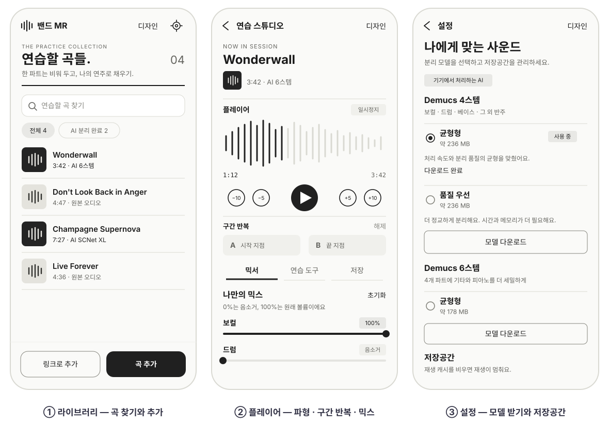
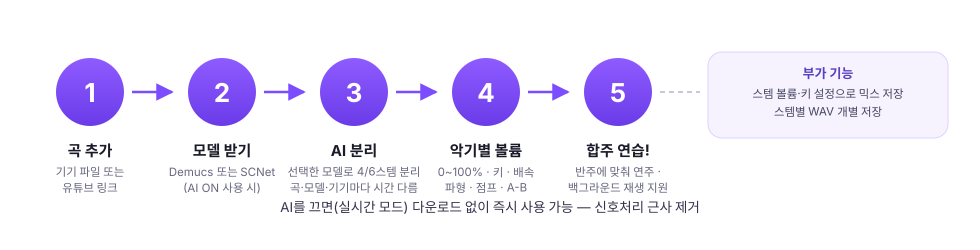
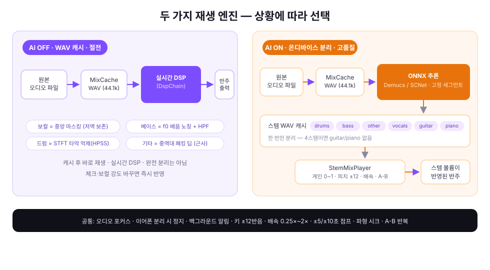

악기 소리를 줄여 합주용 반주를 만드는 앱



4스템은 보컬·드럼·베이스·그 외, 6스템은 기타·피아노를 추가합니다.
| 모델 | 스템 | 용량 |
|---|---|---|
| Demucs htdemucs | 4 | 약 236MB |
| Demucs htdemucs_6s | 6 | 약 178MB |
| SCNet XL | 4 | 약 286MB |
| SCNet XL IHF | 4 | 약 283MB |
| 기능 | 범위 |
|---|---|
| 키·배속 | ±12반음 · 0.25×~2×, 곡마다 저장 |
| 재생 | 파형 시크 · ±5/±10초 점프 · A-B 반복(최소 0.5초) |
| 백그라운드 | 알림·잠금화면·블루투스 조작, 전화·이어폰 분리 시 일시정지 |
| 내보내기 | 믹스 WAV는 볼륨·키만 적용하며 배속·A-B는 제외. 스템별 WAV는 분리 파일 그대로 저장 |
| 관리 | 테마 10종 · 재생 캐시·분리 결과 정리 |